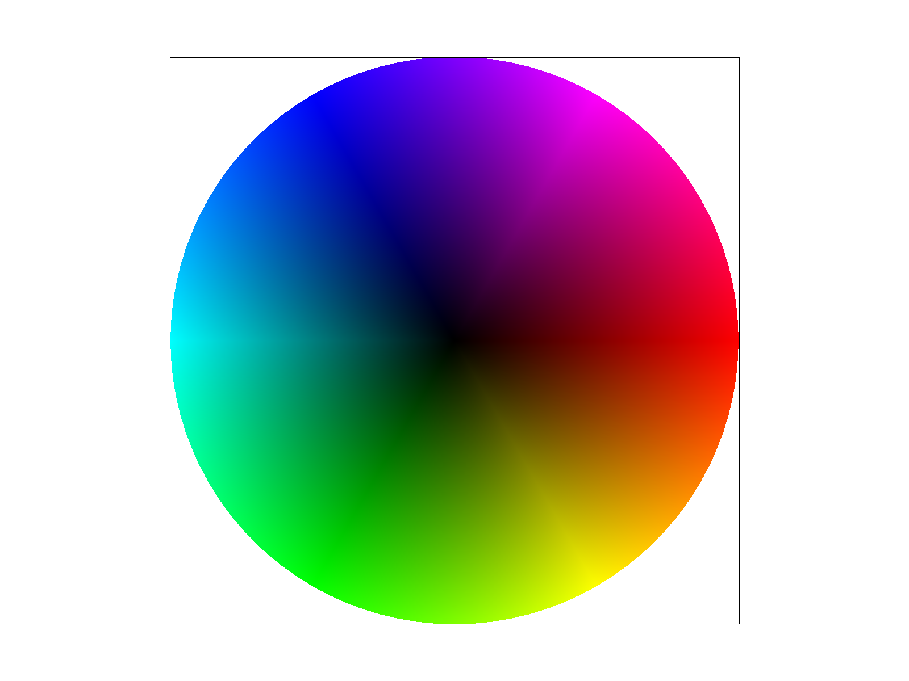

CS184/284A Spring 2025 Homework 1 Write-Up
Link to webpage: https://cal-cs184-student.github.io/hw-webpages-maxi_taxi/hw1/index.html
Link to GitHub repository: https://github.com/cal-cs184-student/sp25-hw1-0-1
Overview
Give a high-level overview of what you implemented in this homework. Think about what you've built as a whole. Share your thoughts on what interesting things you've learned from completing the homework.Task 1: Drawing Single-Color Triangles
To rasterize a triangle, I first create a bounding box by calculating the minimum and maximum values of the x and y coordinates of the three vertices. This ensures that we only check pixels that have a chance of being inside the triangle, reducing unnecessary computations. Next, I determine the triangle’s orientation (clockwise or counterclockwise) using an edge function, which calculates the cross product of vectors formed by the triangle’s edges. The sign of this cross product helps determine whether a point lies inside or outside the triangle. I then loop through all the pixels within the bounding box and compute a sample point at the center of each pixel. Using this sample point, I evaluate the edge function for all three edges to determine if the sample point is inside the triangle. If all three edge function values have the same sign, the point is inside, and I color it. My algorithm is no worse than checking every point within the bounding box because it only tests pixels that are within the bounding box.Task 2: Antialiasing by Supersampling
I implemented supersampling by sampling multiple locations within a pixel and averaging their values to determine the final pixel color. Building off of Task 1, the algorithm first creates a bounding box around the triangle to limit the area we check for coverage. Then, it iterates through all the pixels within this bounding box and further iterates through each subsample within each pixel. For each subsample, I compute its position by evenly distributing sample points within the pixel and then use the edge function to check whether the sample lies inside the triangle. If the subsample is inside, its color is stored in the sample buffer, which keeps track of multiple color values per pixel instead of just one. After processing all the subsamples for a pixel, I compute the final pixel color by averaging the stored color values. This technique is crucial for antialiasing, as it helps reduce jagged edges by blending colors at triangle boundaries. I adjusted the pipeline by storing multiple colors per pixel in the sample buffer instead of a single color, factoring in the sample rate to determine subsample positions within each pixel and Averaging subsample colors to compute the final displayed color.
In sample rate 1, there is only one sample per pixel so it is either filled or empty which leads to a harsh/unsmooth edge. But as we increase the sample rate to 4 or 16, we have more samples leading to smooth out edges
|
|
|

|
Task 3: Transforms
Task 4: Barycentric coordinates
A barycentric coordinate describes a point inside a triangle using its vertices by assigning weights that sum to 1, representing how much influence each vertex has on the point. These weights, denoted as w0,w1,w2 are calculated based on the areas of sub-triangles formed with the sample point. For example, in the given triangle image, the top vertex is red, the right vertex is green, and the left vertex is blue. As we move toward the center, the colors blend smoothly due to linear interpolation of the weights. When a point is closer to the top vertex (red), the weight w0 is higher, meaning red has more influence, while the influence of blue and green is lower. This explains why colors mix gradually and why moving toward a specific vertex results in a stronger presence of that vertex's color.|

|
|
Task 5: "Pixel sampling" for texture mapping
Pixel sampling is the process of determining the color of a pixel when rendering a texture. This is done by transforming the (x, y) screen coordinates into (u, v) texture coordinates and deciding how to sample the texture color corresponding to the pixel. I implemented this by first iterating over each pixel in the triangle’s bounding box and computing its barycentric coordinates. These barycentric coordinates are then used to interpolate the texture coordinates (u, v) for each subpixel. Once I have the texture coordinates, I fill in the sample parms struct with all the necessary information. Finally, after sampling the texture color using the specified sampling method, I store it in the sample buffer. In nearest sampling takes in the (u, v) texture coordinates, this method scales them to the texture dimensions and selects the closest integer texel coordinate. In bilinear sampling, we retrieve the four nearest texels surrounding the (u, v) coordinate and interpolate between them first along the x-axis and then along the y-axis
From the images, you can see that bilinear interpolation produces smoother results than nearest interpolation, especially noticeable in Image 1 vs. Image 3. The difference becomes even more pronounced when using a lower sample rate.
|
|
|
|
|
|
Task 6: "Level Sampling" with mipmaps for texture mapping
Level sampling is the process of selecting a mipmap level for texture mapping. Instead of always using the highest resolution texture, level sampling chooses a lower-resolution mipmap for distant pixels and a higher-resolution mipmap for closer pixels. In my implementation, building upon Task 5, I calculate the neighboring texture points uv_dx and uv_dy and measure the distance between them to determine the appropriate mipmap level. These differential UV coordinates are stored in the sample params struct, and the distance between uv_dx and p_uv indicates how large or small the texture appears on the screen. By taking the logarithm of the maximum of these distances in get_level, we compute a level value that determines which mipmap should be used for sampling.
Supersampling rate: when adjusting the supersampling rate affects both rendering time and memory usage. A higher rate takes longer to process and requires more memory because it blends multiple sample points within a pixel. However, a higher rate reduces aliasing by averaging the samples, producing smoother images.
Pixel sampling: Nearest sampling is faster and uses less memory since it picks the closest texel. However, it can produce blocky edges. Bilinear sampling reads and interpolates four texels around the sample point, leading to smoother transitions between pixels. This reduces aliasing but requires more computation and memory than nearest sampling.
Level Sampling: L_ZERO always uses the highest resolution mipmap, which preserves texture detail but may introduce aliasing when the texture appears smaller on the screen. L_NEAREST finds the closest mipmap level to the calculated level. It reduces aliasing more than L_ZERO but does not provide as smooth transitions as L_LINEAR. L_LINEAR blends two mipmap levels, producing smoother visual transitions than the other two methods but requiring more computation.
|
|
|

|
|